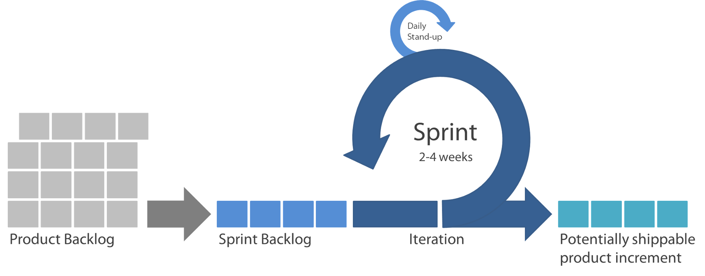
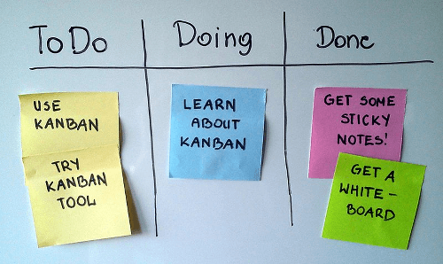
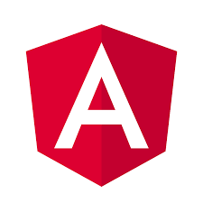
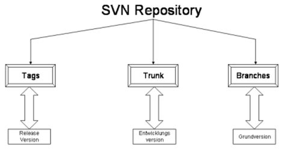

Practicas 2018
Imatia Innovation
En que consistirán...?
- 3 estudiantes
- 240 horas
- 2 proyectos
- 1 misión
... aprender!
Objetivos
- Metodologías ágiles
- Planificación del trabajo
- Trabajo en equipo
- Enfoque Técnico
Proyectos
AppGastos
Descripción
- Aplicación registro de gastos por empleado
Problema
- A día 20 de cada mes deben pasarse los gastos para que se ingresen en nómina
- Más de 100 empleados repartidos en 3 oficinas
Solución
- Evitar acumular trabajo para empleados y administración
- Evitar guardar tickets, uso de papel innecesario
WorkAt
Descripción
- Aplicación para seguimiento de candidatos
Problema
- Muy básica
- Debe adaptarse
- No cumple los requisitos de los usuarios
Solución
- Facilitar el trabajo de seguimiento
- Mejorar nuestra imagen
Metodologías ágiles
Scrum

Kanban

Tecnología
Backend

Frontend

Control de versiones
Estructura proyectos

Ramas